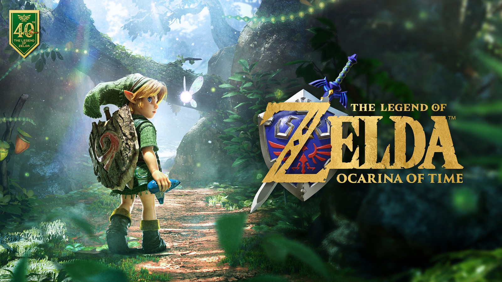

Mi expectativa sobre el remake de Zelda: Ocarina of Time
21 de Septiembre, 2026

Sin palabras. Aún no me creo que van a rehacer esta obra maestra. Cuando escuché el rumor hace mucho me entró un miedo terrible. Ocarina of Time para mí es algo inexplicable: me tomó casi 22 años terminarlo de cierta forma. Iba y volvía cada cierto tiempo para jugarlo, y cada vez avanzaba otro poco (todo esto en un emulador). Cuando por fin lo terminé no pude evitar llorar como un bebé; sentí que dejé ir algo que llevaba atado desde hace mucho. La historia del juego me pegó mucho en esa última vuelta: estaba en un momento complicado en mi vida y, casi como si fuera el destino, lo terminé.